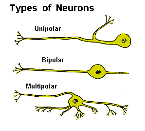
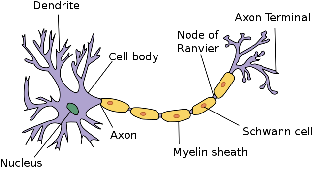
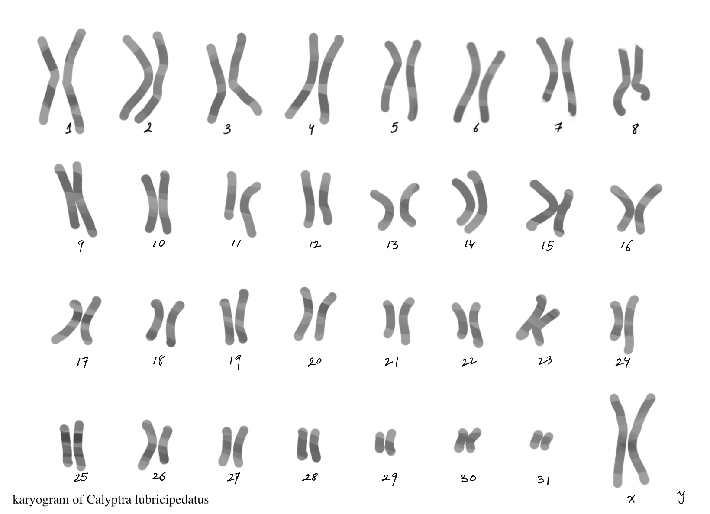
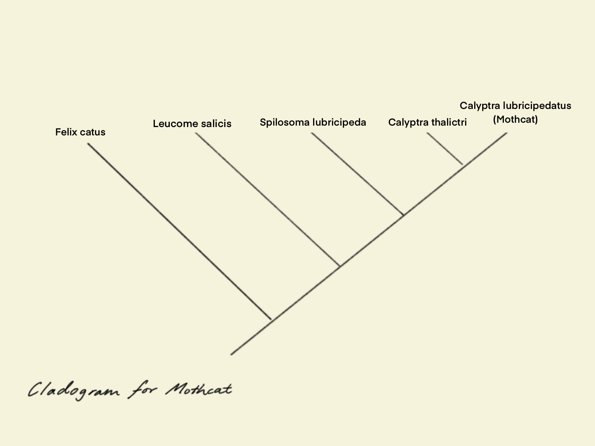
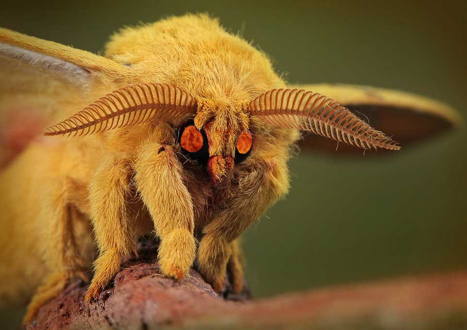
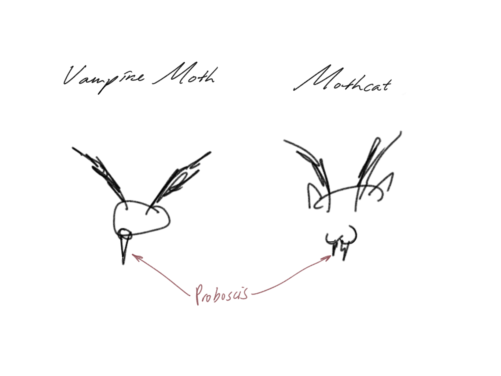

The cell structure of Calyptra lubricipedatus
The nerve cell structure of a mothcat, like that of any other insect, is generally similar to the basic structure found in most animals. Nerve cells, also known as neurons, are the fundamental building blocks of the nervous system. Here's a brief overview of the typical structure of a nerve cell:
Cell Body (Soma): This is the main part of the neuron containing the nucleus and most of the organelles. It is responsible for the metabolic functions of the cell.
Dendrites: These are branching extensions that receive signals from other neurons or sensory cells. In moths, dendrites might be involved in receiving signals related to sensory information such as smell, touch, or vision.
Axon: A long, slender projection that conducts electrical impulses away from the cell body and toward other neurons, muscles, or glands. The axon may be covered by a myelin sheath, which helps in the faster conduction of signals.
Axon Terminals: The endings of the axon where neurotransmitters are released to communicate with other neurons, muscle cells, or glands.
This is a close up labeled diagram of an axon, responsible for transmitting signals away from the cell body. Unlike other moths, mothcats body contains a higher portion of nerve cell which helps them to sense the surrounding quicker and identify their prays.
In mothcats and other insects, neurons play a crucial role in processing sensory information, such as detecting pheromones for mating, navigating the environment, and responding to environmental stimuli. The specific adaptations and variations in the nerve cell structure may depend on the moth species and its ecological niche.
About Calyptra lubricipedatus's genome
Although the ecology of the vampire moth (Clayptra thialictri, mothcat’s closest relative) is well studied, the current genomic knowledge on this species is limited, because genomic resources are scarce and little is known about the genome characteristics. The chromosome number in mothcat is unknown, as was, prior to this study, its genome size. Estimated genome sizes for geometrid species range from 400 to 500 Mb, but can reach up to 1.9 Gb.
Mothcat consist of 32 chromosomes, the karyogram are shown in the following
the following image demostrate a cladogram of mothcat
A cladogram is a diagram used in cladistics, a field of biology that classifies organisms based on common ancestry. Cladistics aims to reflect the evolutionary relationships between different species or groups of organisms.
Type of Speciation
An image of Vampire moth
Now you may wonder, what is the type of speciation that has taken place? To address this question, it's essential to make a comparison between mothcat and the vampire moth. With heightened competition for food sources, mothcat has developed distinct physical features, essentially a "camouflage coat," to attract and mesmerize its prey (humans). This phenomenon is an example of sympatric speciation because mothcat and the vampire moth still inhabit similar ecosystems. However, due to adaptive radiation, they manage to coexist.
This type of speciation caused by behavioral isolation and temporal isolation as environmental factors may influence organisms of the same species developing different mating rituals (e.g. for mothcat are the one with the softest fur) over a period of time. When potential mates do not meet these rituals, individuals do not interbreeds.
Due these specific rituals, more vampire moth that shares the characteristics of mothcat interbreed, resulting a change in mothcat’s chromosomes number (as gene mutates), leads to prezygotic barriers in reproductive isolation which is also one of the reasons why mothcats do not interbreed with vampire moths.
Shared homologous structures
One of the main shared homologous structure that mothcat shares with vampire moth are the structure that both species use to consume food. They have a proboscis that is modified for piercing fruits and sucking the juice. Thus, the blood-feeding habit has evolved from plant-associated feeding behaviors, as opposed to animal associated feeding behaviors.
furthermore, homologies are not just anatomy. We tend to think of homologies in terms of anatomy: the tetrapod limb, insect wings, vertebrate eyes. However, anatomical homologies are just one of many sorts of homologies. Any heritable trait — anything that can be directly or indirectly encoded in DNA — can be a homology.
Content of the second news article.